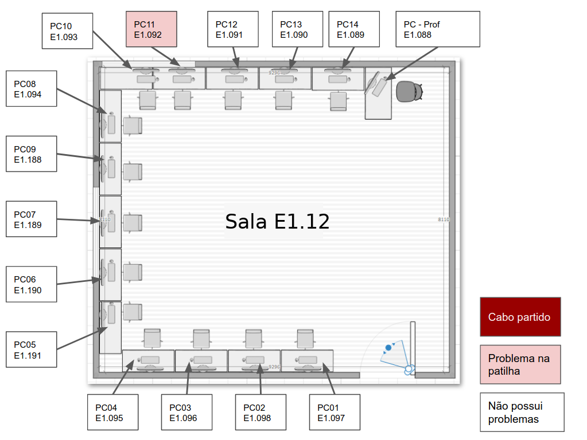

Como o trabalho foi realizado
Durante o preriódo da atividade o aluno Kalleby santos visitou a sala escolhida pelo professor. Esta sala se situava na Escola Secundária de Santo André dentro do bloco E, de informática. A sala escolhida foi a sala E1.12 que se localizava no piso superior do bloco
O aluno visitou a sala e analisou todos os computadores presentes na mesma, em busca de avarias nos cabos de Ethernet. Em seguida foi recolhendo informações acerca dos mesmos e registrando tudo em seu caderno.
Após isso ele passou tudo para suporte digital e começou a criar um modelo 3D da sala juntamente com uma planta 2D onde estaria as informações acerca dos computadores.
Planta da sala
Vista de cima da sala - Modelo 3D
Em seguida o professor convocou à todos para realizar a manutenção dos cabos que estavam partidos, sendo assim o professor distribuiu dois cabos por equipa.
Imagem 1 - O cabo deverá ser substituido pois há um pequeno defeito em sua patilha, sendo assim deve-se substituir o conector RJ-45 para que possamos utilizar o cabo com segurança.

Imagem 2 - Primeiramente deve-se cortar a parte que irá ser substiuída com a ajuda de uma tesoura ou alicate de corte.
Imagem 3 - Em seguida descarnamos o cabo UTP com a ajuda de um alicate de descarnar. Durante esta etapa deve-se tomar muitca cautela para não danificar os fios internos do cabo.
Os fios internos viram trançados à pares, isto para criar um campo eletromagnético que o protejerá o cabo de interferências externas, originadas a partir de outros componenetes elétricos.
Imagem 4 - Após descarnar o cabo devemos destrançar todos os fios internos para que possamos organizá-los de forma correta.
Durante a organização dos fios internos devemos ter o cuidado de manter a mesma sequência em ambas as pontas do cabo. Para isso recomenda-se a utilização de uma das duas sequencias padronizadas: Padrão A ou Padrão B, sendo que o mais utilizado na Europa é o padrão B.
Imagem 5 - Em seguida eu organizei os fios de acordo com o padrão B
Após isso passei ao próximo passo, que seria encaixar o conector
Imagem 6 - Após organizar devidamente os fios internos, peguei um conector RJ-45 para cravar os fios.
Imagem 7 - Em seguida encaixei cos fios com muito cuidado para não sairem da ordem
Imagem 8 - Em seguida já podia cravar o cabo com ajuda de um alicate próprio para esta tarefa.
Imagem 9 - Após cravar o cabo, prossegui a etapa de testes, utilizando um aparelho especifico para esta tarefa
Imagem 10 - Como podemos ver todos os leds acenderam em verde, o que indica que o cabo está a funcionar corretamente.
Imagem 11 - Após finalizar o processo de manutenção no cabo prossegui a substituíção do mesmo.
Como haviam muitos cabos para serem substituidos o professor dividiu esta tarefa por todos da turma, sendo assim eu substituí um cabo da sala E1.14 invés da E1.12
Imagem 12 - Sendo assim utilizei uma chave especifica para soltar os cabos que estavam fixos ao computador
Imagem 13 - Em seguida desparafusei a trava que impedia que os cabos fossem soltos.
Imagem 14 - Instalei o novo cabo, para isso apenas o encaixei na placa de rede e em seguida o prendi atráz do computador utilizando a trava de segurança.
Imagem 15 - Também encaixei o cabo na ficha de rede, que se localizava logo abaixo do computador
Imagem 16 - Por fim liguei a máquina e abri o site do meu trabalho para testar a conexão com a Internet

Imagem 17 - Como podemos ver, Missão cumprida!!! o cabo estava a funcionar corretamente e o computador já podia ter acesso à rede